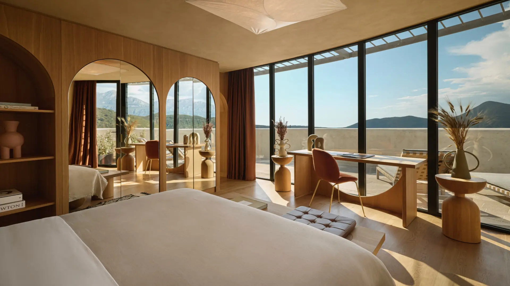

A restored 19th-century fortress at the mouth of the Bay of Kotor — extraordinary place, unfinished hotel.
Mamula is a restored 19th-century fortress on a small island at the entrance to the Bay of Kotor — later a prison and concentration camp during WWII, now a luxury hotel under Banyan Tree. I booked one night in a Jr Suite with Sea View because I love history, and it's not often the history feels this central to the experience.
The property is the reason to stay: arrival is by boat, the restoration is incredibly well done, and I spent most of my stay simply walking the island. I scored Property & Atmosphere a 10/10 — the setting is unlike anything else I've experienced, and I appreciated that the hotel doesn't appear interested in hiding its history.
The operation is another story. Service scored 6/10 — friendly but unpolished — and Food & Beverage 5.5/10, the weakest part of the experience. My overall score landed at 6.5/10: far more impressive as a place than as a hotel, for now.

Stay inside the original fortress structure. Thick stone walls, vaulted ceilings, and the feeling of actually staying inside the fortress rather than looking at it. Entry-level rooms sit in newer construction above it — some prefer the balconies, but I want the stone.
Arrival by boat. The approach to the fortress sets the tone for the whole stay.
One of the most unique hotel concepts in Europe. Whatever you conclude about converting this history into a hotel, it's hard to argue with the singularity of the place.
Set service expectations now. A ten-minute wait to be greeted at lunch, a speakeasy that was 'open' with nobody in it, a hands-off beach — individually minor, collectively they added up.
Plan around the F&B gaps. The beach has no food or beverage outlet — roughly a ten-minute walk to the nearest one — and neither dinner nor the crudo won me over. The presentation felt basic for the price point.
The water policy is real. Tap water isn't drinkable and guests get one complimentary bottle per day; my second one came from the minibar, at a charge. I honestly can't remember encountering that at this level before.
My room had rough edges. A shower that flooded the bathroom floor and loose finish hardware — beautiful room, not a perfectly executed one.
With stronger service and a much better F&B program this could be one of the Mediterranean's most compelling hotels. Today, it's a 6.5/10 — an extraordinary place, not yet an extraordinary hotel.
Rates through me are identical to booking direct — the perks are not. As a Fora advisor, my clients receive a space-available upgrade, daily breakfast, and a hotel credit — plus my direct line to the team on property before and during your stay.
Check Availability